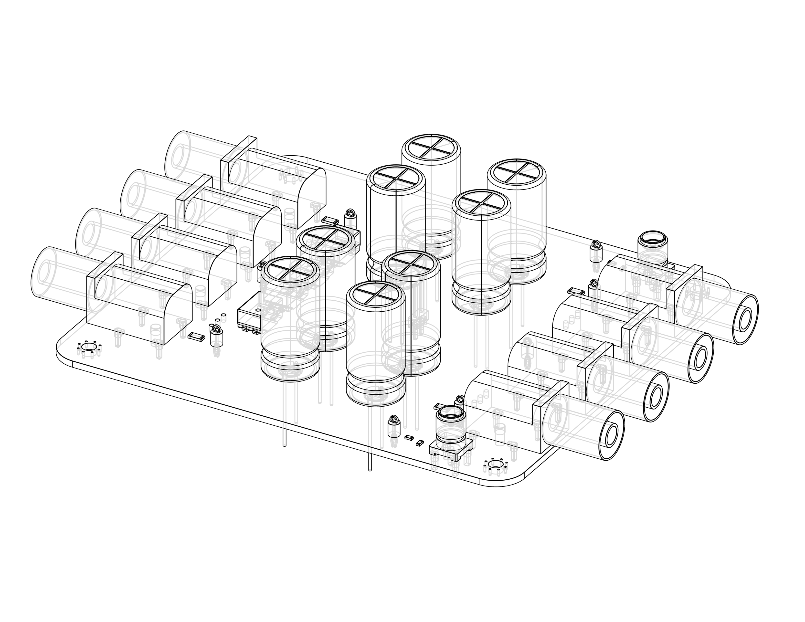
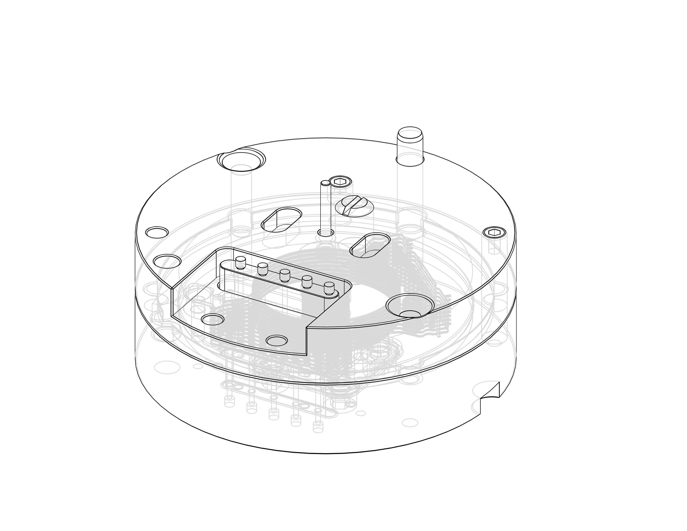
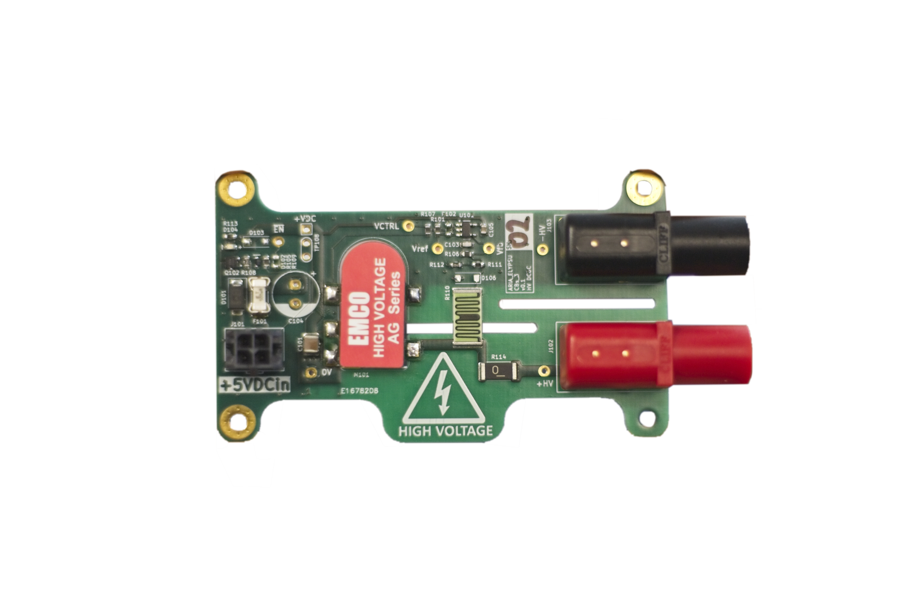
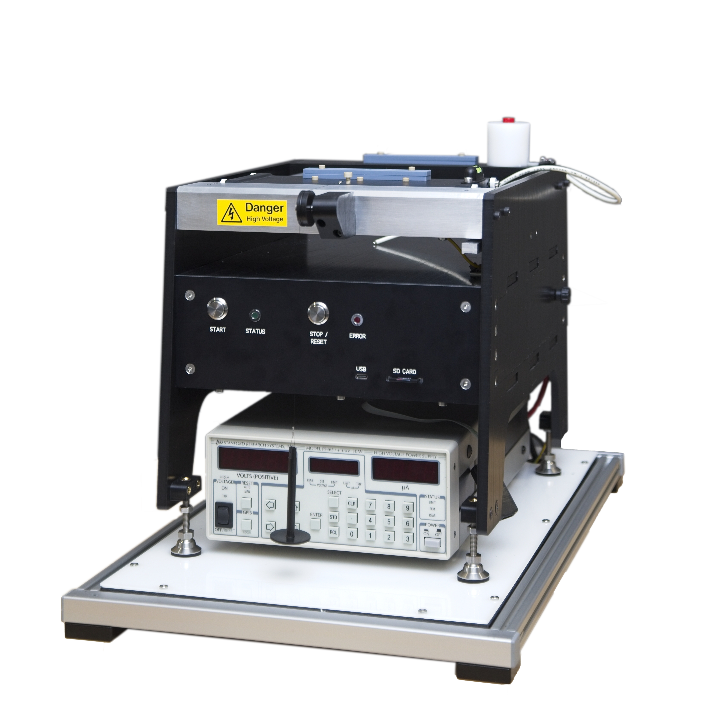
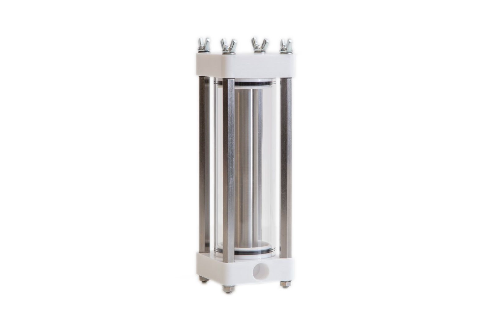
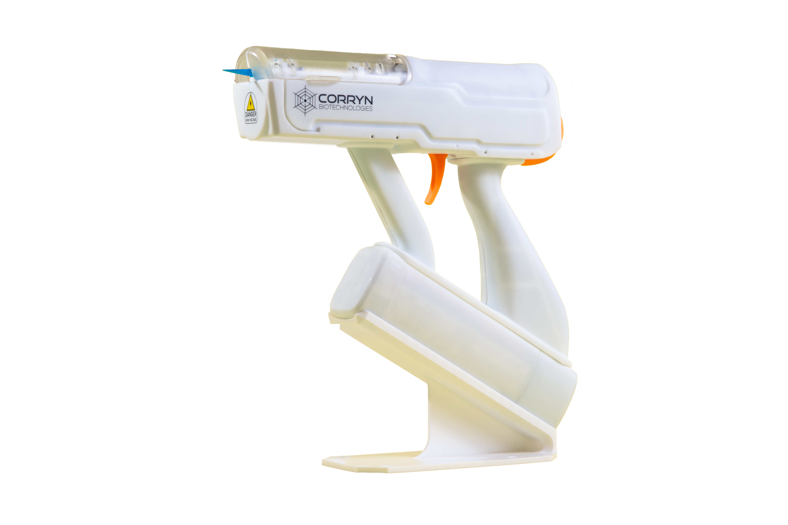

TABLE I.- PROJECTS AT AMODO
| 2025 | ||
| // | MINTSTIM - Current mode brain stimulator and low-noise brain recording system. | Thom Cousins, Sam Maxwell, Alex Welbourne, Emily Hunt |
|
 |
MINTSTIM - Test system for power supply rejection ratio. | Thom Cousins |
| // | ARTFIL - Automated manufacturing system for Atrimus Robotics. Five times reduction in production person hours. | Matt Farrow, Aran Dasan |
| // | SHRMPZ - Test setup and pilot results for improving the welfare of shrimp harvesting by using electrical stunning or culling. | Amanda Matthes, Tom Green |
|
 |
SANGT_MECH - A new robotic actuator that increases power density by 10x | Paddy Appelqvist, Andy Graham |
 |
ELYPSU - Multi-kilovolt, lower power, high efficiency power supply for robotics. Developed for Elysium Robotics this new supply enables electrostatic actuators to be used in modern robotics. | Toby Lane |
| /// | SONMUX - A system to allow Sonalis, an Imperial spinout, to use a Versaonics with their ultrasound transducer for brain imaging. | Tom Searle |
| /// | HXTN - A actually redacted because this one is actually secret! Delivered in a month from kick-off. | Tom Searle |
|
 |
PLIFUNC - Material tester for high-voltage electrostatic actuators. | Tom Green, Tom Searle, Sam Reynolds |
| /// | RAND - Research, modelling, design, and policy recommendations for government response to different pandemic models. | Thomas Milton, Andy Graham, Sam Reynolds |
| /// | FLEXHEG - A 15 sensor tamper detection system. | Emily Hunt, Sam Reynolds, Mikey, Charlie, Phil |
| /// | FLEXHEG - Tray-to-tray encryption using Bluefield 3s. | Sam Reynolds, Phil Bladen |
|
 |
PLIFUNC - Material tester for high-voltage electrostatic actuators. | Tom Green, Tom Searle, Sam Reynolds |
|
 |
PLIFUNC - Material tester for high-voltage electrostatic actuators. | Tom Green, Tom Searle, Sam Reynolds |
| /// | RAND - Research, modelling, design, and policy recommendations for government response to different pandemic models. | Thomas Milton, Andy Graham, Sam Reynolds |
| /// | FLEXHEG - A 15 sensor tamper detection system. | Emily Hunt, Sam Reynolds, Mikey, Charlie, Phil |

|
PLIFUNC - Material tester for high-voltage electrostatic actuators. | Tom Green, Tom Searle, Sam Reynolds |
| /// | RAND - Research, modelling, design, and policy recommendations for government response to different pandemic models. | Thomas Milton, Andy Graham, Sam Reynolds |
| /// | FLEXHEG - A 15 sensor tamper detection system. | Emily Hunt, Sam Reynolds, Mikey, Charlie, Phil |
TABLE II. - A DIFFERENT TABLE
| 2025 | ||
| Developing Sangtera's next generation robot actuator. | Paddy Appelqvist, Andy Graham | |

|
Microbial electrolysis power supply. Electronics, firmware, and software for a new -- negative voltage power supply. Eight indepent channels controlling and monitoring microbial electrolysis cells in the lab and pilot plant. | Toby Lane, Sam Reynolds |
| Continuous flow bioreactor for the production of RNA. Developed for the University of Sheffield | Andy Graham | |
TABLE III. - A DIFFERENT TABLE
| Characteristic | GCM-1 | GCM-2 |
|---|---|---|
| Media pump assembly | ||
| Type | Fresh media and waste media sepa- rated by movable piston |
Same as GCM-1 |
| Capacity | 140 ml | 140 ml |
| Time of feeding | Once a day | Same as GCM-1 |
| Amount of feeding | 1 ml per chamber per day; after day 12, reduced to 0.5 ml per 2-day period |
Same as GCM-1 |
| Timing control | Internal clock no. 1 | Internal clock no. 2 |
| Feeding, each revolution of pump shaft |
2 ml | 2 ml |
| Indicator lamp | When GCM-1 pump operates, the BP-1 lamp illuminates |
When GCM-2 pump operates, the BP-2 lamp illuminates |
| Fixative pump assembly | ||
| Type | Fresh media and waste media sepa- rated by movable piston |
Same as GCM-1 } |
| Capacity | 16 ml | |
| Ejection/advance | 1.7 ml | |
| Advance control | Upon command by program tape |
|
19